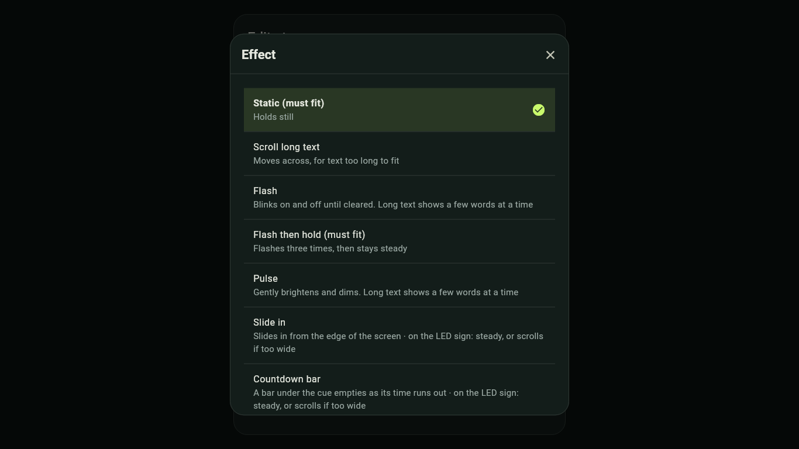
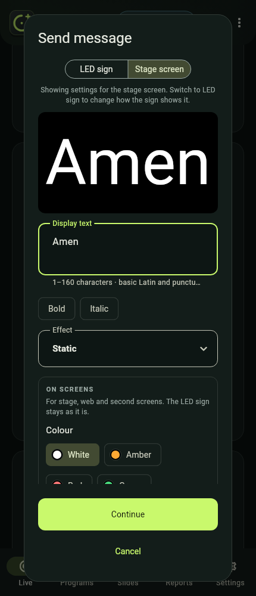
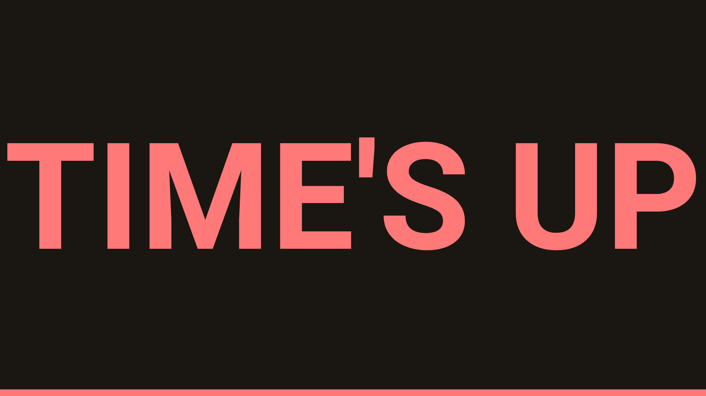
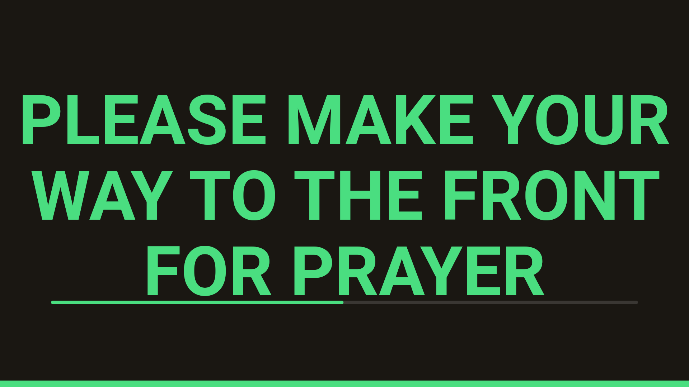
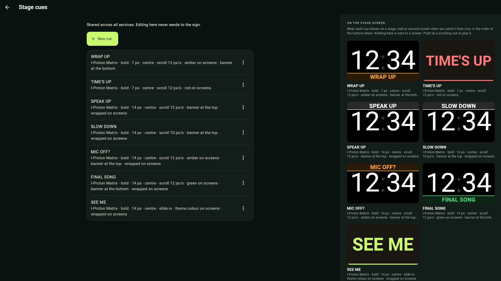

Prepared Stage cues are short reusable instructions such as WRAP UP or SPEAK UP. Configure them before the service in Settings › Stage cues, or use the Manage cues link on Live.
- Create or edit a cue's text, choose Bold or Italic, and pick an Effect. Then set how it looks on the LED sign and on screens; see below.
- Save it. The Live cue buttons share this saved set across services.
- During the service, tap the cue once to send. On a PC, the keys 1 to 9 send the first nine cues, and pressing the number of the cue that is showing goes back to the timer. There is no editing step on Live; choose deliberately. Before a service starts, Stage cues says "Cues work once the service starts".
- Select Show timer when the instruction has served its purpose. The timer has continued beneath the cue.
Changing the saved cue later does not rewrite content already on stage. Deleting an individual cue or warning offers an eight-second Undo, preserving its formatting. This Undo does not apply to deleting reports.

The cues you start with
A new install has seven cues, on keys 1 to 7. They are a starting set: change them, delete them or add your own.
| Key | Cue | On screens | On the LED sign |
|---|---|---|---|
| 1 | WRAP UP | Amber banner at the bottom, pulsing | A word at a time |
| 2 | TIME'S UP | Red, full screen, flashing | Flashes, a word at a time |
| 3 | SPEAK UP | White banner at the top | Scrolls |
| 4 | SLOW DOWN | White banner at the top | Scrolls, a little slower |
| 5 | MIC OFF? | Amber banner at the top | Scrolls |
| 6 | FINAL SONG | Green banner at the bottom | Scrolls |
| 7 | SEE ME | Your theme's colour, full screen, sliding in | Scrolls |
On the LED sign they use the tall 14-pixel letters, which read best from a distance. On screens each is set to wrap, so it holds still and is as large as fits.
If you already use the app, the earlier WRAP UP, TIME'S UP and MIC LOW, where still as they came, are replaced by these seven, followed by any cues you added. Cues and warnings you changed are left alone.
Effects
The Effect list says what each effect does. The names that end in "(must fit)" need text short enough for the LED sign. The words "(must fit)" show only when a sign is the display in use. With stage screens, the second screen or the Stage simulator, the list says just Static and Flash then hold.


| Effect | On screens | On the LED sign |
|---|---|---|
| Static (must fit) | Holds still. | Holds still. The text must fit the sign. |
| Scroll long text | Moves across. | Moves across. |
| Flash | Blinks on and off until cleared. | The same. Long text shows a few words at a time. |
| Flash then hold (must fit) | Flashes three times, then stays steady. | The same, and flashes three times again every 5 minutes while the cue stays up. The text must fit the sign. |
| Pulse | Gently brightens and dims, about every two seconds. | The sign cannot dim, so it shows the text steady. Long text shows a few words at a time. |
| Slide in | Slides in from the bottom edge as it appears, then holds still. A banner slides in from its own edge. | Steady, or scrolls if too wide. |
| Countdown bar | A thin bar in the cue's colour, just under the words, empties as the cue's time runs out. | Steady, or scrolls if too wide. |
| Screen flash | Washes the whole screen once with a deep shade of the cue's colour (red for a white cue) as it appears, then settles. In a banner only the band flashes. | Steady, or scrolls if too wide. |
- Long text with Flash or Pulse. Text too wide for the sign is split into groups of whole words that fit, shown one after another, over and over. "PLEASE WRAP UP NOW" may show as "PLEASE", then "WRAP", then "UP NOW". Screens step through the same groups at the same time, unless Wrap long text is on, when they show the whole message at once. This works for up to 60 characters; for longer text the editor suggests Scroll long text. A single word too wide for the sign still has to be shortened.
- Slide in, Countdown bar and Screen flash are for screens. The LED sign cannot draw them, so it shows the cue steady, or scrolls it at Speed on the LED sign when the text is too wide.
- The countdown bar needs a time to count. That is a warning's time, or the time chosen when a cue is sent for a set time. A cue shown until cleared has no bar.
- Reduced motion. With it on, a cue that slides in simply appears, and Screen flash gives the screen a coloured edge instead of a flash.
- The countdown under a banner never moves or changes with any effect.
One editor, two displays
Over the editor's preview is a small switch, LED sign | Stage screen. It starts on the display you are using. It changes the preview, and it also chooses which settings the editor shows. A line under the switch says which.

| The switch is on | The editor shows |
|---|---|
| LED sign | The group On the LED sign: the display font, Tall · 14 px (switch it off for the shorter 7-pixel letters), the alignment and Speed on the LED sign. |
| Stage screen | The group On screens: colour, position, Wrap long text and Speed on screens. |
| Either | The text, Bold, Italic and Effect. These change both displays. |
Nothing is lost by switching: the hidden settings are kept and saved. Editing a warning's text has the same switch, so a warning can have its own effect, colour, banner and screen speed.
The same switch is on four more windows, and it starts on the display in use: Stage screen with the Stage simulator or stage screens, LED sign otherwise.
- Send message, below the stage cues. Stage screen shows colour, position, speed and Wrap long text. LED sign shows the display font, Tall, the alignment and the LED speed. The text, Bold, Italic and Effect show on both.
- Edit end screen in Settings › Display settings, and the end screen in the program editor, Edit upcoming included.
- At zero, with Custom text, in Settings › Display settings.


It only changes what you see while you write. What is sent and saved is the same as before, so a message or end screen set up on either side reaches the sign and the screens as it always did, and older paired screens are not affected. The Clock choice for When the service ends is untouched.
How a cue looks on screens
The LED sign is small, red and one colour. Stage screens, web screens, a second screen and full screen are large and can do more. The On screens group is for them. Nothing in it changes the LED sign.

| Setting | Choices |
|---|---|
| Colour | White (as before), Amber, Red, Green or Theme colour. |
| Position | Full screen: the cue takes the place of the countdown. Banner at the top or Banner at the bottom: the cue shows in a band and the countdown, or the clock, stays in view. |
| Wrap long text | Shows the cue on up to 3 lines (2 in a banner), centred and as large as fits, instead of scrolling it or shrinking it onto one line. A scrolling cue then holds still on screens while the LED sign keeps scrolling it. |
| Speed on screens | How fast a scrolling cue moves on screens, up to 48, twice the sign's fastest. Until you move it, screens follow the sign. Same as the LED sign puts it back. |
Keep wrapped text short. Text that would be too small to read on 3 lines scrolls instead, so nothing is cut off. With more than 60 characters the editor warns that long text is hard to read from a distance; you can still save it.
A banner keeps the countdown in view.

A banner needs a running service to sit over. After the service has ended, a banner cue fills the screen. Bold, italic and every effect work in a banner too.
A coloured cue that fills the screen sits on a warm charcoal background with a band of its colour along the bottom edge. Red, Green and Theme colour cues have their words in that colour; Amber cues have warm white words. White cues stay white on black.


Wrap long text and the countdown bar together:


Scrolling cues move smoothly on paired screens, web screens, a second screen and full screen, and carry on from where they were when the host sends an update.
In a wide window, the pane beside Settings › Stage cues and beside Warnings & alerts shows every cue and warning as your display will show it: On the LED sign with an LED sign or the LED simulator, and On the stage screen with stage screens or the Stage simulator. Point at a scrolling cue to play it.


Cues, backups and program files you already have look the same as before. A paired phone or tablet still on an earlier version shows every cue in white and full screen, at the sign's speed, with the new effects as steady text.
Text for the LED sign
Switch the editor to LED sign for these. Choose I-Proton Matrix, I-Proton Sq-Matrix, or bundled Tinos. Matrix countdown digits are unchanged. Tinos has regular, bold, italic and bold-italic faces; no font import is needed. Tall 14 px preserves more serif detail. Short 7 px fits a smaller line. Changing square/circular LED preview cells does not change the actual sign's physical LEDs or glyph data.
The sign is 32 columns wide, which is not much: in bold, TIME'S alone is too wide for it.
The width check applies only when a sign is in use. That means the LED sign, or the Simulator standing in for it. With stage screens, the second screen or the Stage simulator, any width can be sent, and a short note says if the text would be too wide for a sign: "Too wide for the LED sign's 32 pixels with this effect. Fine for stage screens; before sending it to a sign, choose Scroll long text or make it shorter." If you later switch to a sign, a message or cue that is too wide is refused with the same explanation as before. Nothing already saved is rejected or changed. The same applies to the stage cue editor, the end screen and zero screen editors, warning cues, the program editor and importing a program.
| Effect | Text too wide for the sign |
|---|---|
| Static, Flash then hold | Must fit when a sign is in use. Shorten the text or choose another effect; for Flash then hold the editor suggests Flash. |
| Scroll long text | Scrolls. |
| Flash, Pulse | Shows a few words at a time. |
| Slide in, Countdown bar, Screen flash | Scrolls on the sign. |
Automatic warnings
Automatic rules live in Settings › Warnings & alerts and apply to all services and rehearsals. They trigger at time remaining, not time elapsed. In a ten-minute segment, a 01:30 rule triggers when 8 min 30 s have elapsed under ordinary uninterrupted timing.

A new install has four warnings, for the operator and the stage. Use suggested warnings puts the suggested set back.
| At | Warning | On screens | Stays up for |
|---|---|---|---|
| 5:00 | 5 MIN LEFT | White banner at the top | 12 seconds |
| 2:00 | 2 MIN LEFT | Amber banner at the bottom | 12 seconds |
| 0:30 | WRAP UP | Amber banner at the bottom | 10 seconds |
| 0:00 | TIME'S UP | Flashes the screen red once, then stays red on the whole screen | 10 seconds |
On the LED sign each scrolls, and stays up long enough to pass twice.
When a warning fires. Each warning fires once in each segment, when the countdown comes down to its time.
- It never fires as a segment starts. A 5-minute segment does not begin with 5 MIN LEFT, and a 3-minute segment never shows it. A 6-minute segment shows it at 5:00.
- TIME'S UP at 0:00 still fires at zero.
- If you add time so that more is left than a warning's time, a warning that has not yet fired in this segment fires when the countdown comes down to it. One that has already fired does not fire again.
- Removing time past a warning's time fires it.
- Rehearsal speeds, phone notifications and Check this service follow the same rule. The check lists every warning that cannot fire in a segment; see Build a reusable program.
Edit a warning
Tap or click a warning, or Add, to open Edit warning or New warning. It is set out as questions.

| Question | What you set |
|---|---|
| When | The time left, in large figures and coloured as in the list. Change sets it. |
| What it shows | A preview that plays by itself, with the LED sign and Stage screen switch, a line saying how the text looks, and Edit text and style, which opens the same editor a cue has. |
| Where | Operator only: in the app and as a notification, while the stage keeps showing the timer. Operator and stage: also on the LED sign and stage screens, which then go back to the timer. |
| How long | Stays up for, up to 120 seconds. For text that scrolls, Scroll once, then back to the timer is offered too; while it is on, the time is set by one scroll. |
| On or off | Switch a warning off without deleting it. |
- On a PC a wide window shows the editor in two columns, with Delete warning at the bottom left and Cancel and Save warning at the bottom right.
- On a phone the editor uses the whole screen, with Save at the top.
- Two warnings cannot share a time. If another warning already fires at the time you choose, the editor says so straight away and Save waits for a different time.
- Deleting still asks first.

A stage warning returns to the current countdown, or At zero, after its time. On the LED path, that time begins after the controller acknowledges it.
New manual cues, Blank, Next and End service supersede a warning. Passed times are not replayed when rules change. If a manual Quick message covers every connected stage screen, automatic stage cues are consumed while it is present; phone warnings continue. With a targeted Quick message, other stage screens can still show warnings.
Alerts on the phone
Under Phone alerts, Clear phone warnings after is separate: choose 15, 30, 60 seconds or Until dismissed, with 30 seconds as default. A segment change or service end clears obsolete warning notices. This does not shorten stage warning duration or remove the active-service notification. Phone warnings use a distinct vibration pattern, which Wear OS watches mirror.
Turn on Android notifications (Turn on) and Precise timing (Allow) where offered, then use Test on the Sound and vibration row. Volume, the notification channel and Do Not Disturb still affect sound. Background operation starts with the LED sign or sharing and keeps warnings running while locked; if Live says background operation is unavailable, keep the app open. Ready for service also shows whether Android battery optimisation could pause warnings with the screen off, with Allow to fix it. Force-stopping the app is not a supported way to silence a service.
Alerts on a PC
A PC shows a Windows notification at each warning and flashes the app's taskbar button. It plays no sound unless you turn on Play the Windows notification sound. The details are in Get started on Windows.